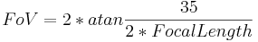
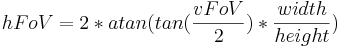

Campo inquadrato
L'angolo inquadrato di una fotografia o fotocamera è una misura della parte di scena ritratta nell'immagine. In parole semplici: quanti gradi di vista sono
inclusi nell'immagine. Un comune obiettivo a focale fissa potrebbe avere un angolo di 50°, un obiettivo fisheye può avere un angolo inquadrato superiore a 180° mentre un panorama completo equirettangolare
o cilindrico avrà un angolo inquadrato di 360°.
Spesso si parla di campo inquadrato quando, in realtà, si intende un angolo inquadrato. Il campo inquadrato è la distanza coperta da una proiezione a una certa distanza. Quindi, se un'immagine scattata a distanza di 1m mostra esattamente un oggetto di larghezza pari a 2m, il campo inquadrato è pari a 2 metri (e l'angolo inquadrato è 90°). L'angolo inquadrato è anche conosciuto con il nome di angolo di copertura. Da qui in poi si parlerà esclusivamente di campo inquadrato (anche si dovrebbe distinguere dall'angolo inquadrato).
Il campo inquadrato è spesso indicato con FoV che è l'acronimo della traduzione inglese del termine (Field of View). Generalmente il campo inquadrato si riferisce più precisamente al campo inquadrato orizzontale (hFoV) di una immagine. Alcune applicazioni fanno uso del campo inquadrato verticale (vFoV) che può essere calcolato utilizzando il rapporto d'aspetto (aspect ratio) dell'immagine:
per le immagini rettilineari:

per le immagini fisheye (approssimazione):

Conversione dalla lunghezza focale
Una ulteriore misura standard della larghezza o strettezza di un obiettivo, è la lunghezza focale (focal lenght).
Assumendo di utilizzare un negativo avente una larghezza di 35mm e un obiettivo rettilineare, il campo inquadrato può essere calcolato nel modo seguente:

Consultare la pagina dedicata alla proiezione fisheye per le relative formule.
Conversione tra orizzontale e verticale (e viceversa)
Per le immagini fisheye (approssimando) ed equirettangolari (height=altezza; width=larghezza):


Per le immagini rettilineari:

